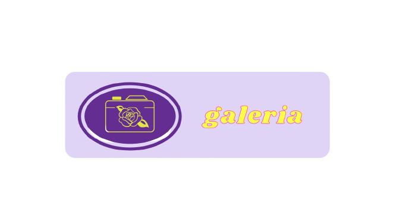
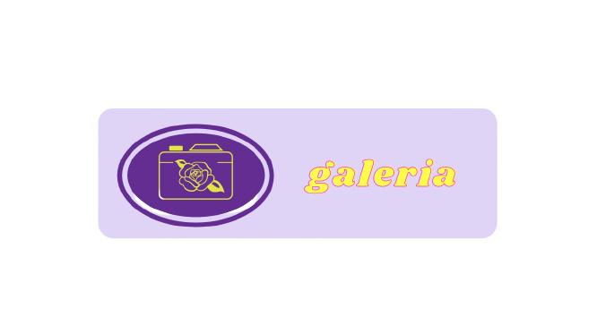

Historia de la empresa
Así inicio todo
A lo largo del tiempo he adquirido pequeñas habilidades que algunas se han complementado
con otras u han formado las bases de conocimientos previos que se necesitan en la industria
gráfica, que he ido perfeccionando cada vez más, son habilidades que me han servido para
dirigir el camino al que quiero llegar como empresa, al encaminarme en el proceso de adquirir
el conocimiento que necesito para mejor las bases de mis saberes tanto en el trabajo, como en el ser...
He encontrado en mi trabajo como el diseño, la fotografía, la edición, la creación de personajes.
El disfrute de hacer esas piezas gráficas con técnica y calidad, con una buena presentación para
el disfrute de las personas, que disfruten ver y guardar los trabajos que realizo y así generar que
sean difundidos para que las personas aprecien mis piezas.
 
